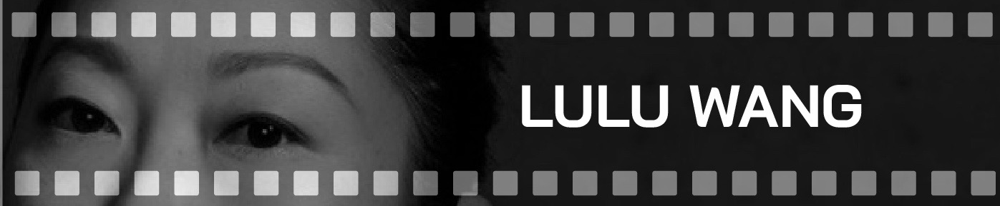
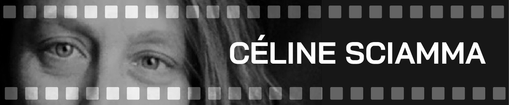
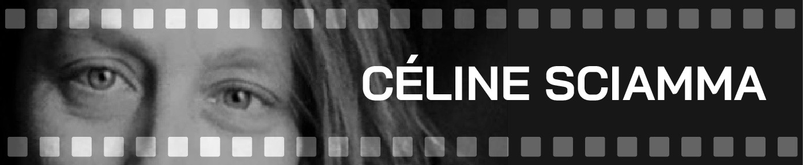

This last year saw great ambition, talent, and heart from a multitude of female directors. Personally speaking, I saw 26 female-directed films that qualified for an Oscar this year that the Academy could have easily placed in at least one of five Best Director slots. But, alas, it was just another nomination day, when outraged film fans deployed the "For $1, name a woman," Billy on the Street meme. (The Academy also erased Jojo Rabbit's female producer, Chelsea Winstanley, from the Best Picture category.) The only silver lining to all this is that four of the five Best Documentary Feature nominees are directed or co-directed by women.
In the Academy's 91-year history, only five women have been nominated in the Best Director category: Lina Wertmüller for Seven Beauties (1976), Jane Campion for The Piano (1993), Sofia Coppola for Lost in Translation (2003), Kathryn Bigelow for The Hurt Locker (2009), and Greta Gerwig for Lady Bird (2017). Of those five, Bigelow stands as the lone winner. While it is true that there are more male directors working in Hollywood (due to the system, to be sure), the argument that is brought up time and again, that there were simply "no good movies made by women" to nominate, is tiresome and an easily proven falsity.
Women gave us superheroes and overall badass ladies in Captain Marvel (Anna Boden), Fast Color (Julia Hart), and Charlie's Angels (Elizabeth Banks). Critics and audiences alike were struck by the work of women of colour like Chinonye Chukwu (Clemency), Kasi Lemmons (Harriet), Mati Diop (Atlantics), Lulu Wang (The Farewell), and Melina Matsoukas (Queen & Slim). Female directors gave audiences women-centred romance in The Ground Beneath My Feet (Marie Kreutzer) and Vita and Virgina (Chanya Button); a female love story was also told through the lens of a lesbian director in Portrait of a Lady on Fire (Céline Sciamma), and another lesbian director delivered a smart and timely comedy with Late Night (Nisha Ganatra). Audiences saw Little (Tina Gordon), Little Woods (Nia DaCosta) and Little Women (Gerwig), but no picture was truly little.
Each listed film, and many more, brought something to the table that could rival any man nominated for Best Director this year (no matter how deserving they themselves are). To the dismay of film bros, I'm sure there are many female film lovers who imagine an alternative universe where every year, all the Best Director nominees are female. It's hard to narrow so many amazing films down to just five, but in such a universe where we celebrate women and women only, these are the five whose names I would have loved to see on screen as John Cho says, "Congratulations to those women."
In December, 58 migrants were killed when their boat capsized off the coast of Mauritania. The coast of Northwest Africa has seen thousands perish at sea since 2005 while making the dangerous journey to Europe. This latest disaster saw boats carrying hundreds of migrants from Senegal, the motherland of Atlantics director, Mati Diop.
Born in France, she comes from a line of prominent Senegalese artists. Diop began her career as an actor in 2008, playing the leading role in Claire Denis' 35 Shots of Rum (aka 35 Rhums) Since then, she has appeared in 11 films, but has been breaking out as a director. Her short film, Atlantiques (2009), won the Rotterdam International Film Festival's Tiger Award for Short Film, but her feature debut, based on the short of the same name, has found even more success and accolades. With Atlantics, she became the first Black female director to have her film in competition at Cannes, and won the Grand Prix.
Atlantics is a ghost story, one that makes audiences reflect on and pleads us to not forget the lives lost during the migrant crisis. Despite seemingly no longer of importance to Western, televised news cycles, it's a tragedy that persists. The risk of migrating to Europe is fuelled by the economic security the continent offers, which is in contrast with the low incomes offered to Senegalese workers.
Not only is Atlantics a migrant story, but it's also one of adolescence and young love. It's a coming-of-age story as young Ada, who lives in a culture that still forces young women into arranged marriages, takes her fate into her own hands. Diop delivers a beautiful and haunting tale of retribution.
Atlantics is now on Netflix.
Film fans can't get enough of Lulu Wang, from her adorable relationship with Moonlight director Barry Jenkins to her groundbreaking new feature, The Farewell. This is only Wang's second feature, and one we feature on our Best Films of 2019 list. She has also directed various shorts and music videos, but nothing compares to the praise awarded to her comedic family drama that explores the differences between Chinese and American culture.
The film, written in both English and Mandarin, is autobiographical for the director. Born in China, Wang and her family emigrated to the United States when she was 6. The film explores her own grandmother's illness and the long-standing Chinese tradition of not disclosing terminal illness to the elderly.
Awkwafina (who won a Golden Globe for her performance) as Billi is a stand-in for Wang, as we follow her difficult journey of coming to terms with the traditions of a culture she feels disconnected from. Despite taking place primarily in China and spoken in Mandarin, The Farewell is universal. It's the American story of how children of immigrants struggle to balance their Western beliefs and those of their origins. If you're not a child of an immigrant, it still hits hard. Zhao Shuzhen as Billi's grandmother, Nai Nai, gives one of the best performances of the year in her very first role.
The Farewell is available to buy and rent everywhere.
There's a scene in Hustlers where Jennifer Lopez's character flips the bird at the camera, which sums up how people felt toward the Oscars for snubbing the fillm, and especially for Lopez's performance, seen as a frontrunner for Best Supporting Actress. Lopez has proven time and again how talented she is as an actor, singer and dancer.
Director Lorene Scafaria is also a triple threat: She's acted in films like Nick and Norah's Infinite Playlist, which she also wrote and composed a song for. Her name can also be found in the song credits of Whip It, for directing and writing Seeking a Friend for the End of the World, The Meddler, and now Hustlers. Her body of work and talent makes it incredibly clear as to why many regard Hustlers as one of the best films of the year.
Based on a 2015 article by Jessica Pressler, Hustlers is a film about the forgotten working class and how they had to hustle during the economic recession in 2008 — how they managed to survive in a system that favours the elite. The hustle is shown as an act of empowerment, and validates that sex work is work, and even a more honest work than what is done by their Wall Street clientele. The film follows Lopez's Ramona and her girls as they become desperate to earn cash in a crashing economy. They pick up men at bars, drug them, lure them into the club and max out their credit cards. The film doesn't vilify nor celebrate their actions, but it emphasizes the mistreatment of strippers by their male clients and exploitation from those who "own" them.
Hustlers really isn't a film about the hustle, though, it's about family. The female relationships built here, especially that between Lopez and Constance Wu's Destiny, are this year's finest. These are women who love money, sure, but they love each other more, with Lopez acting as the mother figure. Scafaria also celebrates the female body in all forms. From Wu to Cardi B to Trace Lysette, these are all women of different ethnicities and body types who are shown dancing at the club because, in a culture that often favours one type of woman over the other, all are beautiful. Scafaria also manages to bring out Lopez's best performance of her career.
With Little Women receiving Oscar nominations for Saoirse Ronan, Florence Pugh, costume design, score, adapted screenplay and Best Picture, it was puzzling to many why Greta Gerwig couldn't snag a Best Director nomination. The anger over this was deafening, and rightfully so. Little Women is a tale of female authorship during a time when women had difficulty achieving it, had to write under a male pseudonym, or had a man take credit for their words (as seen in Colette, for example). Ronan's Jo March struggles to make her way in a male-dominated book publishing industry, with a man telling her how her book should start and end.
Once again, we find the Oscars just as male-dominated, with women fighting to get a seat at the director's table. Since her film career began in 2006, Gerwig has starred in a handful of amazing works like Jackie, 20th Century Women, and collaborations with now-husband, Noah Baumbach, in Frances Ha and Mistress America. But with her two directorial works, she quickly became one of the best directors of the last decade.
Little Women is another masterful coming-of-age story from Gerwig that is faithful to its author, but modernizes it for a new audience of young women. The film navigates the life of a family as they struggle through poverty and loss, while also experiencing celebratory moments of love. Gerwig weaves the past and present of the March sisters in a non-linear, but affecting way that's a meditation on growing up, with both timelines differentiating with colour: yellows to symbolize the warmth of childhood together, and blues to symbolize the sadness of adulthood apart. Little Women fights the view of a woman's place, while the characters fight against norms, strive to be respected, and be the heroines of their own story.
I've written about Portrait of a Lady on Fire so much that I'm running out of different ways to describe just how it's a masterpiece. Appearing in both our Best Films of the 2010s and Best Films of 2019 lists, Céline Sciamma's fourth feature film feels like the culmination of her work. Like Gerwig, Sciamma is a filmmaker who likes to explore female-centred coming-of-age narratives, but the French auteur also looks at themes of gender fluidity and sexual identity. Her first-ever film premiere as a director, for her first feature, Water Lilies, was at Cannes, where it was nominated for several top prizes. Her following two films, Tomboy and Girlhood, also made their rounds at prestigious festivals and were awarded various accolades, but none more so than her latest film.
It was upsetting to learn that France chose to submit Les Misérables for an Oscar instead of Portrait, killing my hope of seeing Sciamma at the award show. Portrait may not have resonated with the French Ministry of Culture, but it certainly did for LGBTQ+ viewers around the world. The film is a portrait of lesbian love, painted by a lesbian writer-director and starring a lesbian. It's a love story relying solely on the female gaze, creating an authenticity that films of the genre often lack. Sciamma refuses the fetishization that lesbian relationships are often subjected to by men, either behind the lens or looking in. It's a slow-burn romance, with its most lustful scenes expressed through love-filled words, as opposed to love-making. Through this relationship, and through the film's handling of abortion, the film shows the importance of having women tell women's stories. With Portrait, Sciamma delivers a brilliant and absolutely stunning, subversive, and honest depiction of lesbian love.


 
